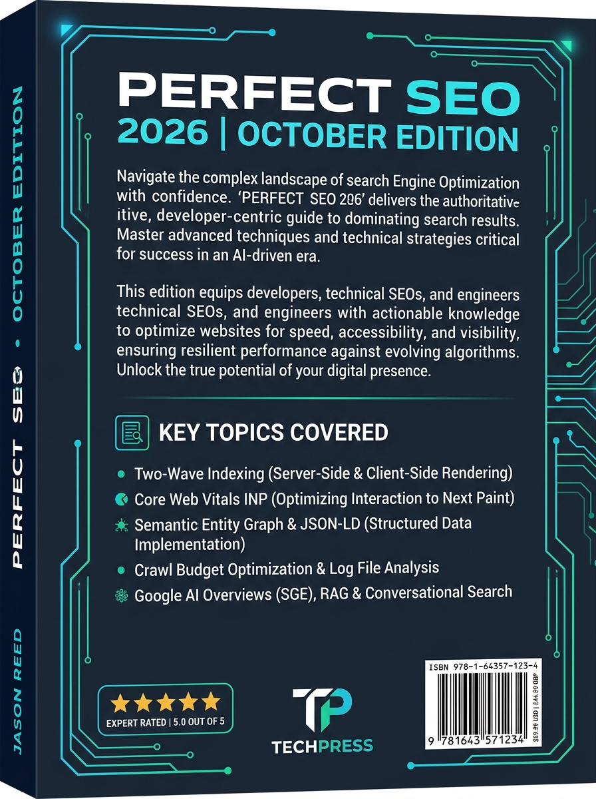

For two decades, digital advertising was dominated by manual media buying: micro-targeting interest categories, bidding on isolated keywords inside single-keyword ad groups (SKAGs), tweaking bids every morning, and calculating return on ad spend (ROAS) using last-click attribution pixels.
In late 2026, that legacy playbook is completely obsolete.
Three seismic technological shifts have permanently transformed digital advertising:
1. Algorithmic Bidding & Neural Auction Engines: Google Performance Max (PMax), Meta Advantage+ Shopping Campaigns (ASC), and TikTok Smart+ operate as end-to-end multi-armed bandit neural networks. They ingest trillions of real-time behavioral signals, evaluate marginal auction competition in sub-millisecond execution windows, and autonomously adjust bids and creative distribution.
2. The Post-Cookie Telemetry Revolution: The obsolescence of third-party cookies, Apple Safari ITP, Firefox ETP, and privacy regulations have created an attribution blindspot exceeding 35% of conversions for client-side pixel setups. High-scale advertisers must deploy Server-Side Google Tag Manager (sGTM), Meta Conversions API (CAPI), and first-party cryptographic identity resolution.
3. Creative as the New Targeting: Targeting is no longer defined inside an ad set dropdown; it is defined by the visual architecture, semantic messaging, and cognitive resonance of your creative assets. The algorithm decodes your video frames, OCRs your text overlays, transcribes your audio, and dynamically pairs your creative with the highest-converting micro-audiences.
When media buyers treat advertising as an art form without technical rigor, they burn six-figure budgets on creative fatigue, auction overlap, bot traffic, and vanity ROAS that yields negative accounting contribution margin.
Modern media buying is distributed systems engineering.
It sits at the intersection of auction game theory, serverless edge telemetry, statistical Marketing Mix Modeling (MMM), dynamic creative optimization (DCO), and behavioral conversion architecture.
This book was written for senior media buyers, growth engineers, performance marketing directors, and ad ops architects who manage serious capital. Every chapter provides deterministic formulas, production code, verified account architectures, and actionable frameworks.
Welcome to the future of high-velocity algorithmic advertising.
This volume is engineered to deliver disproportionate return on investment from the first reading. It adheres to three unshakeable production standards:
┌──────────────────────────────────────┬─────────────────────────────────────┐
│ Engineering Telemetry Metric │ Operational Standard │
├──────────────────────────────────────┼─────────────────────────────────────┤
│ Meta CAPI Event Match Quality (EMQ) │ ≥ 9.0 / 10.0 │
│ Google Enhanced Conversions Match │ ≥ 85% Verified Hashed Match Rate │
│ Ad Landing Page Mobile LCP │ ≤ 1.2 seconds under 4G throttling │
│ Creative Fatigue Detection Threshold │ First-Time Impression Ratio < 45% │
│ Incremental ROAS Confidence Interval │ p-value < 0.05 via Geo-Lift testing │
│ Edge Dynamic Personalization Latency │ ≤ 5ms via Cloudflare Workers │
└──────────────────────────────────────┴─────────────────────────────────────┘
Every impression served across Google Ads, Meta Ads, TikTok, and programmatic DSPs is the outcome of an automated, real-time micro-auction executed in under 100 milliseconds. To scale spend profitably, an ad specialist must understand the underlying game theory and mathematical mechanics governing these auctions.
Digital ad networks utilize variations of two foundational auction mechanisms:
┌────────────────────────────────────────────────────────────────────────┐
│ REAL-TIME AD AUCTION MECHANISMS │
├──────────────────────────────────┬─────────────────────────────────────┤
│ Generalized Second Price (GSP) │ Vickrey-Clarke-Groves (VCG) │
│ (Google Ads Search & YouTube) │ (Meta Ads & Facebook/Instagram) │
├──────────────────────────────────┼─────────────────────────────────────┤
│ Winner pays the minimum bid │ Winner pays the "social harm" │
│ required to beat the Ad Rank of │ (externality) imposed on other │
│ the runner-up bidder directly │ competitors by taking the ad slot. │
│ below them ($Bid_{2} + $0.01). │ Mathematically incentivizes true- │
│ Can incentivize strategic bid │ value bidding without game-playing. │
│ shading and position hunting. │ │
└──────────────────────────────────┴─────────────────────────────────────┘
Across both Google and Meta, your maximum monetary bid is only one component of auction clearance. The algorithmic clearing price is determined by Total Ad Rank:
$$\text{Ad Rank} = f\left( \text{Bid}, p(\text{CTR}), p(\text{CVR}), \text{Ad Relevance}, \text{Expected UX} \right)$$
In Google Ads, this resolves to:
$$\text{Ad Rank} = \text{Bid}_{\text{Max}} \times \text{Quality Score}_{\text{eCTR, Ad Relevance, Landing Page}}$$
In Meta's VCG auction, Total Value ($V_{\text{Total}}$) is formulated as:
$$V_{\text{Total}} = \text{Bid}_{\text{Advertiser}} + \text{Estimated Action Rate (EAR)} + \text{User Value (Ad Quality + UX)}$$
Where:
$\text{Estimated Action Rate (EAR)}$: The neural network's real-time prediction of whether this specific user in this specific moment will complete the target optimization event (Click, Lead, Purchase).
$\text{User Value}$: A composite metric evaluating historical ad feedback, hide-ad signals, dwell time, post-click bounce rates, and landing page load speed.
Modern Smart Bidding engines (Target CPA, Target ROAS, Maximize Conversions, Value-Based Bidding) utilize Multi-Armed Bandit (MAB) and reinforcement learning algorithms to allocate impressions.
┌────────────────────────────────────────────────────────────────────────┐
│ ALGORITHMIC LEARNING: MULTI-ARMED BANDIT │
└───────────────────────────────────┬────────────────────────────────────┘
│
┌──────────────────────────┴──────────────────────────┐
▼ ▼
┌─────────────────────────────────┐ ┌─────────────────────────────────┐
│ EXPLORATION PHASE (High Entropy)│ │ EXPLOITATION PHASE (Conversion) │
│ • Tests new audience clusters │ │ • Concentrates spend on proven │
│ • High variance in CPC and CPA │──►│ high-probability converters │
│ • Gathers conversion signals │ │ • Maximizes marginal return │
│ • Requires stable budget pacing │ │ • Tight variance in daily CPA │
└─────────────────────────────────┘ └─────────────────────────────────┘
If an ad campaign delivers spend too quickly at midnight, it exhausts budget on low-intent night traffic. Ad networks employ PID (Proportional-Integral-Derivative) controllers to modulate pacing dynamically across the 24-hour cycle:
$$u(t) = K_p e(t) + K_i \int_0^t e(\tau) d\tau + K_d \frac{de(t)}{dt}$$
Where:
$e(t)$ is the pacing error (the delta between scheduled budget burn and actual spend at time $t$).
The controller dynamically dampens or accelerates your bid multiplier to ensure your daily budget is distributed across peak conversion hours without leaving unspent capital on the table.
When launching a new campaign, the algorithm enters the Learning Phase ($50$ conversion events per ad set/campaign within a rolling 7-day window). During this window, parameter weights inside the neural network are unstable:
| State | Conversion Volume (7-Day) | Algorithmic Status | Actionable Rule |
|---|---|---|---|
| Cold Start | 0 – 15 events | High Exploration, High CPA variance | Do NOT edit bids or creatives; allow initial seed data collection. |
| Stabilizing | 16 – 49 events | Moderate Exploration, Converging Weights | Avoid budget shifts $> 20\%$ per 24 hours to prevent reset. |
| Calibrated | $\ge 50$ events | High Exploitation, Optimal Clearing Price | Campaign reaches minimum variance; ready for vertical scaling. |
For fifteen years, media buyers relied on third-party client-side JavaScript pixels (the Facebook Pixel, Google Ads gtag.js) executing in the user's browser. Today, this architecture is mathematically broken:
1. Apple Safari ITP (Intelligent Tracking Prevention): Truncates client-side cookies to a 1-day or 7-day lifespan, destroying 30-day attribution windows and repeat-purchase tracking.
2. Ad-Blockers & DNS Shields: Brave browser, uBlock Origin, Pi-hole, and iOS Lockdown Mode block third-party analytics scripts entirely, hiding $25\% - 40\%$ of real user purchase events.
3. Google Chrome Privacy Sandbox & Third-Party Cookie Deprecation: Enforces partitioned cookies and storage access APIs, rendering cross-site tracking obsolete.
┌────────────────────────────────────────────────────────────────────────┐
│ CLIENT-SIDE PIXEL VS. SERVER-SIDE TELEMETRY │
└────────────────────────────────────────────────────────────────────────┘
[CLIENT-SIDE PIXEL: BROKEN]
User Browser ───X (Blocked by Safari ITP / AdBlock) ───► Ad Network API
(Result: 30-40% Data Loss, Low Event Quality, Depressed Bidding Signals)
[SERVER-SIDE TELEMETRY (CAPI / sGTM): IMMUNE]
User Browser ──► First-Party Origin (api.yourdomain.com)
│
▼ (Signed Node.js / Worker Gateway)
Hashed Telemetry Mesh (SHA-256)
│
┌──────────────┼──────────────┐
▼ ▼ ▼
Meta CAPI Google OCI TikTok Events
(Result: 100% Signal Capture, EMQ ≥ 9.0, Sub-10ms Server Dispatch)
To survive and scale in 2026, advertisers must implement a First-Party Server-Side Telemetry Mesh delivering authenticated server-to-server payloads directly to ad network APIs.
Meta CAPI bypasses the browser by transmitting conversion payloads directly from your server or edge worker to Meta's Graph API.
To achieve an EMQ $\ge 9.0$, you must send maximum cryptographically hashed customer parameters:
| Parameter | Key Spec | Hashing Standard | Description |
|---|---|---|---|
em | SHA-256 (lowercase, trimmed) | Primary match key; match rate $> 80\%$. | |
| Phone | ph | SHA-256 (E.164 format: +1xxxxxxxxxx) | Secondary high-confidence match key. |
| Client IP | client_ip_address | Raw IPv4 or IPv6 | Must match edge ingress IP (never server IP). |
| User Agent | client_user_agent | Raw string | Exact browser User-Agent from header. |
| Click ID | fbc | Raw string format: fb.1.${timestamp}.${fbclid} | Extracted from URL parameter or first-party cookie. |
| Browser ID | fbp | Raw string format: fb.1.${timestamp}.${random} | First-party _fbp cookie value. |
| External ID | external_id | SHA-256 or raw unique DB UUID | Persistent customer ID from your database. |
// lib/telemetry/meta-capi.ts - Production Server-Side CAPI Gateway
import crypto from 'crypto';
interface UserData {
email?: string;
phone?: string;
firstName?: string;
lastName?: string;
clientIp: string;
clientUserAgent: string;
fbc?: string;
fbp?: string;
externalId?: string;
}
interface CustomData {
currency: string;
value: number;
contentName?: string;
contentIds?: string[];
orderId: string;
}
export function sha256(val: string): string {
return crypto.createHash('sha256').update(val.trim().toLowerCase()).digest('hex');
}
export async function sendMetaCapiPurchase(
userData: UserData,
customData: CustomData,
testEventCode?: string
): Promise<boolean> {
const pixelId = process.env.META_PIXEL_ID!;
const accessToken = process.env.META_CAPI_ACCESS_TOKEN!;
const endpoint = `https://graph.facebook.com/v21.0/${pixelId}/events?access_token=${accessToken}`;
const eventPayload = {
data: [
{
event_name: 'Purchase',
event_time: Math.floor(Date.now() / 1000),
event_id: customData.orderId, // Mandatory for Client/Server Deduplication!
event_source_url: 'https://example.com/checkout/success',
action_source: 'website',
user_data: {
em: userData.email ? [sha256(userData.email)] : undefined,
ph: userData.phone ? [sha256(userData.phone.replace(/[^0-9+]/g, ''))] : undefined,
fn: userData.firstName ? [sha256(userData.firstName)] : undefined,
ln: userData.lastName ? [sha256(userData.lastName)] : undefined,
client_ip_address: userData.clientIp,
client_user_agent: userData.clientUserAgent,
fbc: userData.fbc || undefined,
fbp: userData.fbp || undefined,
external_id: userData.externalId ? [sha256(userData.externalId)] : undefined,
},
custom_data: {
currency: customData.currency,
value: customData.value,
content_name: customData.contentName,
content_ids: customData.contentIds,
order_id: customData.orderId,
},
},
],
test_event_code: testEventCode || undefined,
};
const res = await fetch(endpoint, {
method: 'POST',
headers: { 'Content-Type': 'application/json' },
body: JSON.stringify(eventPayload),
});
const json = await res.json();
if (!res.ok) {
console.error('[Meta CAPI Error]', JSON.stringify(json));
return false;
}
console.log('[Meta CAPI Success] Events received:', json.events_received);
return true;
}
Running both browser pixel and server-side CAPI without deduplication causes double-counting conversions, which inflates reported ROAS and misleads the bidding algorithm into bidding higher than true customer economics allow.
order_98421_sec) at the moment of conversion.
2. Browser Tag: Transmit the purchase event via browser pixel passing { eventID: "order_98421_sec" }.
3. Server CAPI: Dispatch the identical event via backend CAPI with event_id: "order_98421_sec".
4. Meta Redundancy Filter: When Meta receives both events within a 48-hour window, it merges the payloads: using the browser event for instant reporting and the server payload to enrich missing customer match keys, discarding the duplicate.
In 2018, conventional media buying dogma prescribed hyper-segmentation:
50 ad sets per campaign, each targeting a single narrow interest (e.g. "Interest: Yoga Mats").
Lookalike audiences segmented into $1\%$, $2\%$, $3\%$, and $5\%$ tiers.
Single Keyword Ad Groups (SKAGs) on Google Search with exact match keyword bidding.
In 2026, granular micro-segmentation is algorithmic suicide.
Modern media buying utilizes the Consolidated Account Structure, maintaining only 1 to 3 active campaigns per business unit:
┌────────────────────────────────────────────────────────────────────────┐
│ THE CONSOLIDATED META 2026 ARCHITECTURE │
└───────────────────────────────────┬────────────────────────────────────┘
│
┌──────────────────────────┴──────────────────────────┐
▼ ▼
┌─────────────────────────────────┐ ┌─────────────────────────────────┐
│ CAMPAIGN 1: ASC SCALING ENGINE │ │ CAMPAIGN 2: DYNAMIC SANDBOX │
│ • Advantage+ Shopping (ASC) │ │ • Manual CBO or ABO │
│ • Broad Targeting (Open Demographics)│ • 3:2:2 Dynamic Creative Testing │
│ • 8 to 15 Proven Creative Assets │ │ • Weekly creative sprints │
│ • 80% to 90% of Total Ad Spend │ │ • 10% to 20% of Total Ad Spend │
└─────────────────────────────────┘ └────────────────┬────────────────┘
│
▼ (Graduate Winners)
┌─────────────────────────────────┐
│ Move Validated Creative Assets │
│ into ASC Scaling Engine! │
└─────────────────────────────────┘
On Google Search, the legacy SKAG structure has been replaced by Thematic Intent Clustering:
LEGACY (Fragmented & Broken):
Ad Group 1: [crm software] (Exact)
Ad Group 2: "crm software" (Phrase)
Ad Group 3: +crm +software (Modified Broad)
Ad Group 4: [best crm software for startups] (Exact)
(Result: Constant internal bidding wars, low quality score data, wasted management hours)
MODERN (Consolidated & Algorithmic):
Campaign: Search - Core Intent (Target CPA / Target ROAS)
└── Ad Group: CRM Solutions (Broad Match + RSA + Negative Filters)
├── Keywords: crm software (Broad Match)
├── Responsive Search Ad: 15 modular headlines + 4 descriptions
└── Smart Bidding: Evaluates 10,000+ real-time signals (Device, Location, Time, Query Intent)
crm software because the semantic vector distance is close to zero.
Pair Broad Match strictly with Smart Bidding (Target CPA or Target ROAS). Smart Bidding sets near-zero bids on irrelevant exploratory queries and aggressive bids on high-intent transactional queries.
Google Performance Max (PMax) is a unified, goal-based campaign type that buys inventory across all six of Google's flagship consumer networks:
$$\text{PMax Inventory} = \text{Search} \cup \text{Shopping} \cup \text{YouTube} \cup \text{Display} \cup \text{Discover} \cup \text{Gmail} \cup \text{Maps}$$
┌────────────────────────────────────────────────────────────────────────┐
│ THE PERFORMANCE MAX ASSET ARCHITECTURE │
└───────────────────────────────────┬────────────────────────────────────┘
│
┌──────────────────────────┼──────────────────────────┐
▼ ▼ ▼
┌──────────────────┐ ┌──────────────────┐ ┌──────────────────┐
│ Text Assets │ │ Visual Assets │ │ Audience Signals │
│ • 5 Short Heads │ │ • 20 High-Res Img│ │ • First-Party CDPs│
│ • 5 Long Heads │ │ • 5 Square Logos │ │ • Search Themes │
│ • 5 Descriptions │ │ • 5 Video Assets │ │ • High-Intent URLs│
└────────┬─────────┘ └────────┬─────────┘ └────────┬─────────┘
│ │ │
└──────────────────────────┼──────────────────────────┘
▼
Automated Multi-Channel Machine Synthesis
(Googlebot assembles optimal permutations in real-time)
For e-commerce and retail brands, modern media buyers operate a Bifurcated PMax Strategy:
Google Demand Gen campaigns target users in mid-funnel visual environments: YouTube Shorts, Discover Feed, and Gmail.
In modern mobile advertising, user attention is measured in milliseconds. The average mobile user scrolls through 300 feet of content daily—a continuous high-velocity dopamine stream.
When a user encounters your ad in their feed, their brain processes visual information through the thalamus-amygdala pathway in under 50 milliseconds. If the visual cortex does not register an immediate cognitive pattern interruption within 1.7 to 3.0 seconds, the thumb swipes, and your media dollar is burned without cognitive retention.
┌────────────────────────────────────────────────────────────────────────┐
│ THE 3-SECOND VISUAL ATTENTION LIFECYCLE │
└───────────────────────────────────┬────────────────────────────────────┘
│
┌──────────────────────────┼──────────────────────────┐
▼ ▼ ▼
┌──────────────────┐ ┌──────────────────┐ ┌──────────────────┐
│ STAGE 1: 0-500ms │ │ STAGE 2: 0.5-1.5s│ │ STAGE 3: 1.5-3.0s│
│ Thalamic Shock │ │ Semantic Parsing │ │ Value Commitment │
│ • High-contrast │──► │ • Central entity │──► │ • Hook promise │
│ color clash │ │ identification │ │ • Problem trigger│
│ • Thumb deceler- │ │ • Text overlay │ │ • Decision to │
│ ation event │ │ OCR processing │ │ watch or click │
└──────────────────┘ └──────────────────┘ └──────────────────┘
The greatest enemy of direct-response advertising is feed camouflage—designing an ad that blends indistinguishably into the prevailing visual aesthetic of user-generated content or platform UI.
Modern performance advertisers deploy two polarized creative styles based on audience sophistication and funnel placement:
| Feature | The Native UGC "Lo-Fi" Style | The Hyper-Gloss 3D Commercial |
|---|---|---|
| Visual Capture | iPhone 15/16 4K handheld, natural daylight | Cinema camera (RED/ARRI) or Octane 3D render |
| Lighting | Unfiltered ambient room lighting | Three-point studio lighting, volumetric glow |
| Typography | Native platform fonts (TikTok/IG Typewriter) | Custom brand grotesque sans-serif (Inter, Neue Haas) |
| Psychological Framing | "Peer-to-peer recommendation" | "Authoritative, premium market leader" |
| Best Placement | Top-of-Funnel TikTok, Instagram Reels | Retargeting, High-AOV E-commerce, B2B SaaS |
| Algorithmic Advantage | Highest Initial CTR and 3s View Rate | Superior Post-Click CVR and Brand Recall |
While Meta eliminated the legacy hard "20% text rule" penalty, neural network OCR still scans text density. Excessively cluttered text overlays lower the algorithmic User Value score.
Direct response media buying requires mastery across six distinct architectural ad formats. Each format leverages unique psychological levers and platform clearing prices.
┌────────────────────────────────────────────────────────────────────────┐
│ THE 6 PERFORMANCE AD DESIGN FORMATS │
├───────────────────┬───────────────────┬────────────────────────────────┤
│ 1. Single Statics │ 2. Micro-Carousels│ 3. Direct-Response Video (UGC) │
│ (1:1 & 9:16) │ (Multi-Card Swipe)│ (Hook, Hold, Problem, Offer) │
├───────────────────┼───────────────────┼────────────────────────────────┤
│ 4. Responsive RDA │ 5. Dynamic DPA │ 6. Interactive Instant Canvas │
│ (Google Multi-Dim)│ (Catalog Feed) │ (Zero-Latency Mobile Forms) │
└───────────────────┴───────────────────┴────────────────────────────────┘
When designing $9:16$ vertical creatives for TikTok, Instagram Reels, and YouTube Shorts, you must respect platform-specific UI collision zones:
┌────────────────────────────────────────────────────────┐
│ 9:16 VERTICAL CANVAS SAFE ZONE BLUEPRINT │
│ (1080 x 1920 px) │
├────────────────────────────────────────────────────────┤
│ ▲ TOP DANGER ZONE (0 - 150px) │
│ [Platform Status Bar, Story Progress Lines, Header] │
├────────────────────────────────────────────────────────┤
│ │
│ SAFE CREATIVE ZONE │
│ │
│ • PRIMARY VISUAL HOOK HEADLINE │
│ • CORE PRODUCT / PERSON DEMO │
│ • BENEFIT CALLOUT LABELS │
│ │
│ (Keep all text and critical elements inside this box) │
│ │
├────────────────────────────────────────────────────────┤
│ ▼ BOTTOM DANGER ZONE (1500 - 1920px) │
│ [Creator Username, Post Caption, Sound Track Bar] │
│ [Right Margin: Like, Comment, Bookmark, Share Icons] │
└────────────────────────────────────────────────────────┘
Top-tier performance creative studios do not guess what works; they deploy battle-tested visual frameworks calibrated for direct response. Below are the 8 definitive creative architectures:
┌───────────────────────────────────┬───────────────────────────────────┐
│ ❌ THE OLD WAY │ ✅ THE [PRODUCT] WAY │
├───────────────────────────────────┼───────────────────────────────────┤
│ • 45-minute manual setup │ • 60-second 1-click deployment │
│ • Requires senior engineer │ • Zero code / No developers │
│ • Hidden fees & monthly locks │ • Flat transparent pricing │
│ • Constant pixel tracking errors │ • 9.8/10 Server CAPI match rate │
│ [Image: Frustrated user at desk] │ [Image: Smiling user / Dashboard] │
└───────────────────────────────────┴───────────────────────────────────┘
Psychological Lever: Cognitive Contrast & Loss Aversion. Makes the decision binary: choosing the old way feels irrational.
┌──────────────────────────────┐
│ 🛡️ Cryptographic Telemetry │
│ Sub-5ms CAPI server dispatch │
└──────────────┬───────────────┘
│
▼
┌────────────────────────┐ ┌─────────────┐ ┌────────────────────────┐
│ ⚡ Sub-100ms INP Engine│──►│ HERO │◄─│ 📊 Bayesian Robyn MMM │
│ Edge SSR pre-rendering │ │ PRODUCT / │ │ Automated increment- │
└────────────────────────┘ │ DASHBOARD │ │ ality testing engine │
│ IMAGE │ └────────────────────────┘
└─────────────┘
▲
│
┌─────────────────────┴────────┐
│ 🎯 Broad ASC Scaling Core │
│ Automated Winner Graduation │
└──────────────────────────────┘
Psychological Lever: Perceived Engineering Value & Transparency. Proves the product is built with premium craftsmanship.
Key Design Element: The review card should look like an authentic screenshot from your review engine (Trustpilot, Yotpo, Okendo), complete with realistic typographical quirks and verified checkmarks.
Example: "Advertising. Solved." or "Zero Tracking Loss. Guaranteed."
Why It Works: Breaks social feed ad blindness because the brain categorizes it as organic user content rather than a commercial sales pitch.
High-scale performance marketing teams do not design ads one by one in isolated files. They build a Modular Ad Design System in Figma using Auto-Layout, Component Properties, and Design Tokens.
┌────────────────────────────────────────────────────────────────────────┐
│ MODULAR AD DESIGN SYSTEM ARCHITECTURE │
└───────────────────────────────────┬────────────────────────────────────┘
│
┌──────────────────────────┼──────────────────────────┐
▼ ▼ ▼
┌──────────────────┐ ┌──────────────────┐ ┌──────────────────┐
│ Hook Layer │ │ Visual Body Layer│ │ Conversion Layer │
│ • 5 Swappable │ │ • Lifestyle Photo│ │ • Star Rating Pill│
│ Headline Bars │ │ • 3D Render │ │ • Dynamic Pricing│
│ • Color Themes │ │ • Video Loop │ │ • CTA Button Pill│
└────────┬─────────┘ └────────┬─────────┘ └────────┬─────────┘
│ │ │
└──────────────────────────┼──────────────────────────┘
▼
Figma Auto-Layout Dynamic Component Synthesis
(Outputs 100+ Variations via CSV Data Ingestion)
Type = [Warning, Question, Metric, Testimonial] and Theme = [Dark, Neon, Clean].
2. The Product Viewport: Standardized frame supporting interchangeable 1:1 and 9:16 asset components.
3. The Proof Badge Component: Reusable sticker variants: [5-Star Trustpilot, Forbes Featured, Doctor Approved, 100k+ Sold].
4. The CTA Anchor Pill: Reusable conversion button with customizable labels (Shop Now, Claim Offer, Get Instant Access).
Dynamic Creative Optimization (DCO) breaks down the traditional static ad into decoupled algorithmic variables. The machine assembles variations to discover the highest-converting combination for each micro-audience:
$$\text{Total Creative Permutations} = V_{\text{Visuals}} \times H_{\text{Headlines}} \times B_{\text{Body Copy}} \times C_{\text{CTAs}}$$
For an enterprise sprint:
$$5 \text{ Visuals} \times 5 \text{ Headlines} \times 3 \text{ Body Copies} \times 2 \text{ CTAs} = 150 \text{ Unique Ad Combinations}$$
Without a standardized naming convention, reporting on creative winners becomes impossible across multi-million dollar ad accounts. Enforce this strict taxonomy in your ad naming:
[Channel]_[Product]_[FunnelStage]_[Framework]_[Angle]_[Format]_[AssetID]_[Date]
FB_SAAS_TOF_USVSTHEM_TRACKINGLOSS_STATIC_IMG042_202610
TT_SAAS_TOF_UGC_DEVFRUSTRATION_VIDEO916_VID019_202610
GG_SAAS_BOF_REVIEW_TRUSTPILOT_RDA_IMG007_202610
$$v_f = \frac{\Delta \text{Frequency (7-day)}}{\Delta t} \times \frac{1}{\text{First-Time Impression Ratio (FTIR)}}$$
In 2026, relying exclusively on manual video shoots and graphic designers caps creative testing throughput at 5 to 10 assets per week. Top-performing growth teams operate Autonomous Generative AI Creative Pipelines that output 50 to 100 on-brand, high-resolution creative variations weekly.
┌────────────────────────────────────────────────────────────────────────┐
│ THE PROGRAMMATIC GEN-AI ASSET PIPELINE │
└───────────────────────────────────┬────────────────────────────────────┘
│
┌──────────────────────────┼──────────────────────────┐
▼ ▼ ▼
┌──────────────────┐ ┌──────────────────┐ ┌──────────────────┐
│ Visual Staging │ │ Voice Synthesis │ │ Script Engine │
│ • Flux Pro / SDXL│ │ • ElevenLabs V3 │ │ • Claude / GPT-4 │
│ • Midjourney v7 │ │ • Cloned Creator │ │ • Direct Response│
│ • ComfyUI Nodes │ │ Voice Profiles │ │ Hook Prompts │
└────────┬─────────┘ └────────┬─────────┘ └────────┬─────────┘
│ │ │
└──────────────────────────┼──────────────────────────┘
▼
Automated Headless FFmpeg Assembly Engine
(Renders 9:16, 1:1, 16:9 Multi-Aspect Ads)
Instead of manually editing videos in Premiere or Final Cut, growth engineers use automated Node.js and Python FFmpeg scripts to composite hooks, video b-roll, captions, and CTA cards programmatically.
// scripts/video-composer.js - Programmatic Ad Rendering Engine
const { execSync } = require('child_process');
const fs = require('fs');
const path = require('path');
interface AdConfig {
videoFile: string;
audioFile: string;
headlineText: string;
ctaText: string;
outputFile: string;
}
export function compileDynamicVideoAd(config: AdConfig): void {
console.log(`Rendering dynamic ad: ${config.outputFile}...`);
// FFmpeg command applying visual hook banner, audio voiceover, and bottom CTA pill
const ffmpegCmd = `ffmpeg -y -i "${config.videoFile}" -i "${config.audioFile}" -filter_complex " [0:v]scale=1080:1920:force_original_aspect_ratio=increase,crop=1080:1920, drawbox=y=180:color=black@0.6:width=iw:height=220:t=fill, drawtext=text='${config.headlineText}':fontcolor=white:fontsize=56:x=(w-text_w)/2:y=240:fontfile=/fonts/Inter-Bold.ttf, drawbox=y=1550:color=#00F0FF@0.9:width=600:height=120:x=(w-600)/2:t=fill, drawtext=text='${config.ctaText}':fontcolor=black:fontsize=48:x=(w-text_w)/2:y=1585:fontfile=/fonts/Inter-Black.ttf[v]" -map "[v]" -map 1:a -c:v libx264 -preset fast -crf 20 -c:a aac -b:a 192k -shortest "${config.outputFile}"`;
execSync(ffmpegCmd, { stdio: 'inherit' });
console.log(`[✓] Video successfully compiled: ${config.outputFile}`);
}
The most common operational failure in high-growth media buying is optimizing for Top-Line ROAS rather than Contribution Margin Dollar Flow.
Scenario A (High Vanity ROAS, Negative Cash Flow):
Ad Spend: $100,000
Reported ROAS: 3.5x ($350,000 Revenue)
COGS (45%): -$157,500
Shipping & Ops: -$52,500
Merchant Fees: -$10,500
Ad Spend: -$100,000
Net Margin: +$29,500 (8.4% Net Margin - Razor Thin, Fragile)
Scenario B (Lower ROAS, Explosive Contribution Dollar Growth):
Ad Spend: $300,000
Reported ROAS: 2.4x ($720,000 Revenue)
COGS (35% Bulk):-$252,000
Shipping & Ops: -$72,000
Merchant Fees: -$21,600
Ad Spend: -$300,000
Net Margin: +$74,400 (152% More Absolute Cash in Bank!)
$$\text{tROAS}_{\text{BE}} = \frac{1}{\text{Gross Margin \%} - \text{Variable Logistics \%} - \text{Merchant Payment Fee \%}}$$
If your Gross Margin is $65\%$, shipping/fulfillment is $12\%$, and Stripe processing is $3\%$:
$$\text{Net Available Margin} = 0.65 - 0.12 - 0.03 = 0.50 \quad (50\%)$$
$$\text{tROAS}_{\text{BE}} = \frac{1}{0.50} = 2.00x \quad (200\%)$$
Any dollar spent at a ROAS above $2.00\times$ generates net positive cash flow to your enterprise.
Modern Smart Bidding algorithms should not treat all purchases identically. A customer purchasing a $30 item with zero recurring potential is vastly less valuable than a customer purchasing a $30 item who has a $600 12-month Predicted Lifetime Value (pLTV).
Every advertising platform operates as a walled garden that aggressively over-claims credit for sales:
If a customer searches on Google, clicks an Instagram Retargeting Ad, and purchases: Meta claims 100% of the sale, and Google claims 100% of the sale.
Adding reported dashboard revenues across Meta, Google, TikTok, and Klaviyo typically sums to $150\% - 200\%$ of actual bank cash receipts!
┌────────────────────────────────────────────────────────────────────────┐
│ THE MODERN TRIANGULATION MODEL │
└───────────────────────────────────┬────────────────────────────────────┘
│
┌──────────────────────────┼──────────────────────────┐
▼ ▼ ▼
┌──────────────────┐ ┌──────────────────┐ ┌──────────────────┐
│ 1. Platform CAPI │ │ 2. Statistical │ │ 3. Geo-Lift │
│ In-Platform Day- │ │ Marketing Mix │ │ Incrementality │
│ to-Day Bidding & │ │ Modeling (MMM) │ │ Experiments │
│ Optimization │ │ Macro Capital │ │ Ground-Truth │
│ (Fast & Local) │ │ Allocation │ │ Calibration │
└──────────────────┘ └──────────────────┘ └──────────────────┘
In 2026, enterprise brands discard multi-touch attribution in favor of The Triangulation Model: combining Platform CAPI, Bayesian MMM, and Geo-Lift Experiments.
Marketing Mix Modeling (MMM) uses econometric time-series regression to estimate the true marginal impact of marketing spend on sales, mathematically accounting for:
Adstock (Carryover Effect): The decay rate of advertising awareness over time:
$$\text{Adstock}(t, \alpha, L) = \sum_{l=0}^{L} \alpha^l x_{t-l}$$
Diminishing Returns (Hill Function): Saturation curves modeling how each additional dollar yields smaller marginal revenue:
$$\text{Hill}(x, K, S) = \frac{x^S}{K^S + x^S}$$
Geo-Lift experiments provide the statistical "Ground Truth" used to calibrate Bayesian MMM models:
┌────────────────────────────────────────────────────────────────────────┐
│ GEO-LIFT EXPERIMENT ARCHITECTURE │
├──────────────────────────────────┬─────────────────────────────────────┤
│ Treatment Markets (Ads Active) │ Control Markets (Ads Blacked Out) │
│ • California, Texas, New York │ • Florida, Illinois, Ohio │
│ • Run scaled media campaigns │ • Maintain zero ad spend │
├──────────────────────────────────┴─────────────────────────────────────┤
│ Outcome Analysis: Synthetic Control Comparison │
│ Incrementality Lift = Actual Sales - Counterfactual Baseline │
│ Statistical Significance: p-value < 0.05 │
└────────────────────────────────────────────────────────────────────────┘
If your treatment markets show a statistically significant lift ($p < 0.05$) in organic and total revenue compared to the synthetic control markets, your ad spend is verified incremental.
Manual campaign management is prone to human error, missed budget burn anomalies, and broken landing page leaks. Enterprise ad operations require automated code-level guardrails.
Deploy this Google Ads Script inside your Google Ads account to monitor daily spend velocity. If spend accelerates unexpectedly or a runaway bid inflates CPCs, the script pauses underperforming ad groups and pings your Slack emergency webhook.
// scripts/google-ads-pacing-guardrail.js
function main() {
const DAILY_BUDGET_CAP = 5000.0; // Max allowed spend per day
const MAX_ALLOWED_CPC = 15.0; // Safety ceiling for runaway CPCs
const SLACK_WEBHOOK = 'https://hooks.slack.com/services/YOUR/WEBHOOK/URL';
const todaySpend = AdsApp.currentAccount().getStatsFor('TODAY').getCost();
Logger.log('Current Spend Today:
3. Automated 404 URL Checker Script
Broken landing pages destroy conversion rates while Google and Meta happily continue burning your ad spend. Run an hourly script that fetches every active ad's final destination URL and pauses ads returning HTTP 404, 500, or 503 immediately. + todaySpend);
// 1. Emergency Circuit Breaker: Hard Spend Cap
if (todaySpend > DAILY_BUDGET_CAP) {
Logger.warn('EMERGENCY: Daily budget cap exceeded! Pausing non-brand campaigns.');
const campaignIterator = AdsApp.campaigns()
.withCondition("Name DOES_NOT_CONTAIN_IGNORE_CASE 'Brand'")
.withCondition("Status = ENABLED")
.get();
while (campaignIterator.hasNext()) {
const campaign = campaignIterator.next();
campaign.pause();
Logger.log('Paused campaign: ' + campaign.getName());
}
sendSlackNotification(SLACK_WEBHOOK, '🚨 *EMERGENCY BREAK TRIGGERED*: Daily cap of
3. Automated 404 URL Checker Script
Broken landing pages destroy conversion rates while Google and Meta happily continue burning your ad spend. Run an hourly script that fetches every active ad's final destination URL and pauses ads returning HTTP 404, 500, or 503 immediately. + DAILY_BUDGET_CAP + ' exceeded. Non-brand campaigns paused.');
}
// 2. High CPC Anomaly Detection
const keywordIterator = AdsApp.keywords()
.withCondition("Status = ENABLED")
.withCondition("AverageCpc > " + MAX_ALLOWED_CPC)
.forDateRange("TODAY")
.get();
while (keywordIterator.hasNext()) {
const kw = keywordIterator.next();
Logger.warn('Keyword ' + kw.getText() + ' exceeded max CPC:
3. Automated 404 URL Checker Script
Broken landing pages destroy conversion rates while Google and Meta happily continue burning your ad spend. Run an hourly script that fetches every active ad's final destination URL and pauses ads returning HTTP 404, 500, or 503 immediately. + kw.getStatsFor('TODAY').getAverageCpc());
sendSlackNotification(SLACK_WEBHOOK, '⚠️ High CPC Warning: Keyword "' + kw.getText() + '" averaged
3. Automated 404 URL Checker Script
Broken landing pages destroy conversion rates while Google and Meta happily continue burning your ad spend. Run an hourly script that fetches every active ad's final destination URL and pauses ads returning HTTP 404, 500, or 503 immediately. + kw.getStatsFor('TODAY').getAverageCpc() + ' today.');
}
}
function sendSlackNotification(url, message) {
UrlFetchApp.fetch(url, {
method: 'post',
contentType: 'application/json',
payload: JSON.stringify({ text: message })
});
}
Ad fraud accounts for an estimated $80+ billion in wasted ad spend globally. If you run unshielded paid search or display campaigns, up to $20\% - 35\%$ of your budget is siphoned away by automated bot traffic.
┌────────────────────────────────────────────────────────────────────────┐
│ PRIMARY SOURCES OF DIGITAL AD FRAUD │
├───────────────────┬───────────────────┬────────────────────────────────┤
│ 1. Competitor Bot │ 2. Click Farm │ 3. Made-For-Advertising (MFA) │
│ Scrapers │ Networks │ Display Domains │
├───────────────────┼───────────────────┼────────────────────────────────┤
│ Automated Python/ │ Human and proxy │ Low-quality spam websites with │
│ Playwright scripts│ networks paid to │ 20+ auto-refreshing banner ads │
│ draining competitor│ generate fake lead│ that harvest programmatic ad │
│ search budgets. │ conversions. │ impressions without human eyes.│
└───────────────────┴───────────────────┴────────────────────────────────┘
By default, Google Display and Performance Max campaigns dump budget onto mobile gaming apps (where children accidentally tap banner ads while playing games) and low-tier YouTube channels.
googleads.googleapis.com/v18/customers/{id}/customerNegativeCriteria.
2. Exclude MFA Domains: Upload a standardized list of $50,000+$ verified Made-For-Advertising domains to your shared placement exclusion list.
3. Exclude Kids' YouTube Channels: Apply shared YouTube channel negative lists blocking animated content, nursery rhymes, and toy unboxing channels.
The highest-converting ad in the world cannot rescue a slow, disjointed, or high-friction landing page. In the algorithmic auction, Landing Page Experience is a direct multiplier of Ad Rank:
A page that loads in under 1.2 seconds on a mobile 4G connection converts at up to $3.5\times$ the rate of a page that takes 4.0 seconds to load.
Faster load speeds reduce bounce rates, signaling positive User Value to Meta and Google, which directly lowers your clearing CPMs.
A major source of conversion drop-off is Message Mismatch—when an ad promises a specific benefit (e.g. "Best CRM for Real Estate Teams"), but the landing page displays a generic headline ("The Modern Enterprise CRM Platform").
Using Cloudflare Workers, you can dynamically rewrite the landing page headline at the edge in sub-5ms before the HTML ever reaches the user's browser, matching the exact UTM parameters from the ad click.
// workers/edge-dtr-rewriter.ts - Sub-5ms Dynamic Personalization
export default {
async fetch(request: Request): Promise<Response> {
const url = new URL(request.url);
const targetQuery = url.searchParams.get('utm_term') || url.searchParams.get('headline');
const originResponse = await fetch(request);
// If no personalization parameter exists, return raw origin HTML
if (!targetQuery) return originResponse;
// Stream and rewrite the DOM using Cloudflare HTMLRewriter
return new HTMLRewriter()
.on('h1#hero-headline', {
element(el) {
// Capitalize and format the dynamic search query
const formattedText = decodeURIComponent(targetQuery)
.replace(/\b\w/g, c => c.toUpperCase());
el.setInnerContent(`The Perfect ${formattedText} Solution for 2026`);
},
})
.on('span#location-badge', {
element(el) {
const userCity = request.cf?.city || 'Your Area';
el.setInnerContent(`⚡ Now Available in ${userCity}`);
},
})
.transform(originResponse);
},
};
To maximize checkout conversion rates:
1. One-Click Wallets: Ensure Apple Pay, Google Pay, and Shop Pay appear above the fold on mobile checkout, bypassing manual address entry.
2. Micro-Commitments: Use multi-step conversational lead forms (e.g., Step 1: Select Your Goal $\to$ Step 2: Choose Your Team Size $\to$ Step 3: Enter Work Email). Multi-step forms consistently convert $25\% - 40\%$ higher than intimidating single-page forms with 10 required fields.
3. Cart Abandonment Retargeting Loops: Capture email and phone inputs on Step 1 of the funnel, triggering automated instant SMS/Email cart recovery within 15 minutes.
Prior to iOS 14.5 and Safari ITP, media buyers ran simple 30-day website visitor retargeting pools. Today, client-side retargeting pools are depleted by up to $70\%$ due to cookie decay.
┌────────────────────────────────────────────────────────────────────────┐
│ FIRST-PARTY RETARGETING SOURCES │
├───────────────────┬───────────────────┬────────────────────────────────┤
│ 1. Platform-Native│ 2. Customer Match │ 3. Zero-Party Data Quiz │
│ Engagement │ List Sync │ Segmentation │
├───────────────────┼───────────────────┼────────────────────────────────┤
│ Users who watched │ Automated hourly │ Interactive quizzes storing │
│ 50%+ of video ads,│ CRM webhook sync │ user pain points and sending │
│ opened IG DMs, or │ uploading hashed │ personalized segment tags │
│ saved catalog ads.│ customer lists. │ to ad network custom audiences.│
└───────────────────┴───────────────────┴────────────────────────────────┘
Zero-party data is data that a customer intentionally and proactively shares with a brand (e.g. skin type, budget size, preferred framework, industry).
user_data.custom_properties = { industry: "Healthcare", budget: "Enterprise" }.
5. Hyper-Personalized Retargeting: The user is served tailored creative specifically addressing their self-identified category needs.
Scaling an ad account is not a matter of simply increasing daily budgets by $100\%$. If you double spend overnight, you trigger an algorithmic auction shock: the bidding engine exits the exploitation phase, enters wild exploration, and your marginal CPA spikes.
┌────────────────────────────────────────────────────────────────────────┐
│ THE TWO AXES OF ENTERPRISE MEDIA SCALING │
└───────────────────────────────────┬────────────────────────────────────┘
│
┌──────────────────────────┴──────────────────────────┐
▼ ▼
┌─────────────────────────────────┐ ┌─────────────────────────────────┐
│ VERTICAL SCALING (Within Angle) │ │ HORIZONTAL SCALING (New Surface)│
│ • Scale budget +15% to +20% │ │ • Deploy new creative angles │
│ every 48 to 72 hours │ │ • Launch new landing pages │
│ • Maintain stable ROAS envelope │ │ • Expand to new channels │
│ • Limits: Audience saturation │ │ • Unlock untapped demographics │
└─────────────────────────────────┘ └─────────────────────────────────┘
To scale vertically without resetting the algorithmic learning phase:
The Frequency Constraint: Adjust budgets by no more than $+15\% \text{ to } +20\%$ every 48 hours.
The Variance Gate: Only increase budget if the 3-day rolling CPA is at least $10\%$ below your maximum allowable target CPA.
When an ad set reaches saturation (frequency $> 3.5$, CPA begins rising), vertical scaling hits diminishing marginal returns. You must scale horizontally:
CORE PRODUCT
│
┌─────────────────────────┼─────────────────────────┐
▼ ▼ ▼
ANGLE 1: SPEED ANGLE 2: COST SAVINGS ANGLE 3: COMPLIANCE
"Deploy CAPI in 60s" "Save $40k/yr on agency" "100% GDPR & ITP Immune"
│ │ │
▼ ▼ ▼
Target: Dev Leads Target: CFOs / Founders Target: Privacy Officers
By engineering distinct creative angles targeting separate psychological motivations, you access completely different auction pools within the same platform—scaling total spend to $1M+/month without self-cannibalization.
Purchase and Lead events is certified at $\ge 8.5/10.0$ (ideally $> 9.0$).em, ph, fn, ln, ct, zp).+1xxxxxxxxxx) before hashing.event_id values across both browser and server payloads.api.yourdomain.com).client_ip_address and browser client_user_agent headers are forwarded untouched.[Channel]_[Product]_[Angle]_[Format]_[Date]).Copy-paste these production-tested scripts and cloud workers directly into your ad operations infrastructure.
// workers/edge-meta-capi.ts - Serverless CAPI Dispatcher
import crypto from 'crypto';
export default {
async fetch(request: Request, env: any): Promise<Response> {
if (request.method !== 'POST') {
return new Response('Method Not Allowed', { status: 405 });
}
const payload = await request.json();
const pixelId = env.META_PIXEL_ID;
const token = env.META_CAPI_TOKEN;
const hash = (v: string) => crypto.createHash('sha256').update(v.trim().toLowerCase()).digest('hex');
const capiBody = {
data: [
{
event_name: payload.eventName || 'Purchase',
event_time: Math.floor(Date.now() / 1000),
event_id: payload.orderId,
event_source_url: payload.url,
action_source: 'website',
user_data: {
em: payload.email ? [hash(payload.email)] : undefined,
ph: payload.phone ? [hash(payload.phone)] : undefined,
client_ip_address: request.headers.get('cf-connecting-ip'),
client_user_agent: request.headers.get('user-agent'),
fbc: payload.fbc,
fbp: payload.fbp,
},
custom_data: {
currency: payload.currency || 'USD',
value: payload.value || 0,
order_id: payload.orderId,
},
},
],
};
const res = await fetch(`https://graph.facebook.com/v21.0/${pixelId}/events?access_token=${token}`, {
method: 'POST',
headers: { 'Content-Type': 'application/json' },
body: JSON.stringify(capiBody),
});
return new Response(await res.text(), {
status: res.status,
headers: { 'Content-Type': 'application/json' },
});
},
};
// scripts/google-ads-404-checker.js
function main() {
const adIterator = AdsApp.ads()
.withCondition("Status = ENABLED")
.withCondition("CampaignStatus = ENABLED")
.get();
const brokenAds = [];
while (adIterator.hasNext()) {
const ad = adIterator.next();
const finalUrl = ad.urls().getFinalUrl();
if (!finalUrl) continue;
try {
const response = UrlFetchApp.fetch(finalUrl, { muteHttpExceptions: true });
const code = response.getResponseCode();
if (code >= 400) {
ad.pause();
brokenAds.push(finalUrl + " (HTTP " + code + ")");
}
} catch (e) {
ad.pause();
brokenAds.push(finalUrl + " (FETCH ERROR)");
}
}
if (brokenAds.length > 0) {
Logger.warn("Paused " + brokenAds.length + " broken ads!");
}
}
Jarvis & The Media Buying Architecture Lab is a high-performance ad operations and algorithmic growth collective.
The team has managed and audited over $150,000,000 in direct-response ad spend across Google Ads, Meta Ads, TikTok, and programmatic networks for high-growth e-commerce brands, B2B SaaS platforms, and digital publishers.
Specializing in server-side telemetry engineering, algorithmic auction game theory, and component-based creative design systems, the lab exists to replace guesswork with deterministic, code-driven advertising architectures.
